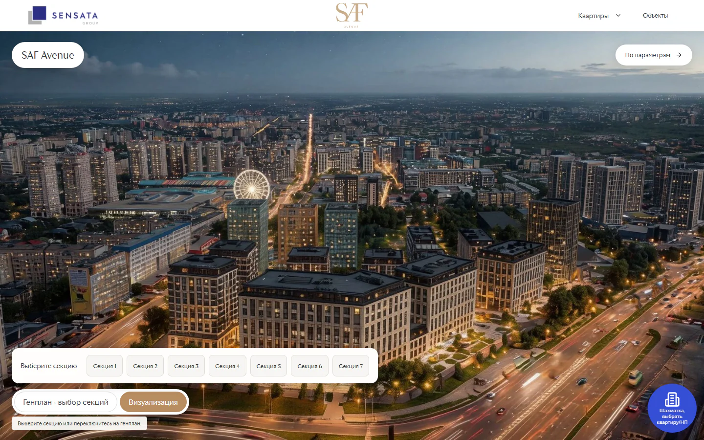
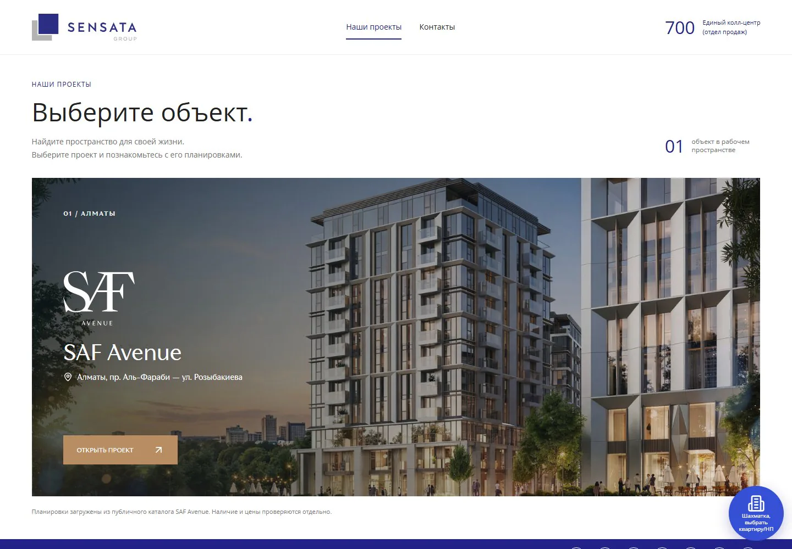

Интерактивный каталог
SAF Avenue
Выбор квартир через визуальный каталог и параметры планировок.

Визуальный выбор секции — экран локальной версии
О проекте
Рабочее пространство для выбора объекта и планировки. Визуальная навигация дополняется фильтрами и карточками квартир. Публичный каталог планировок отделён от подтверждения наличия и цены.
Что внутри
- Визуальный выбор объекта и секции
- Подбор планировок по параметрам
- Карточки и сравнение вариантов
- Интерактивная презентация жилого комплекса
Экраны проекта

